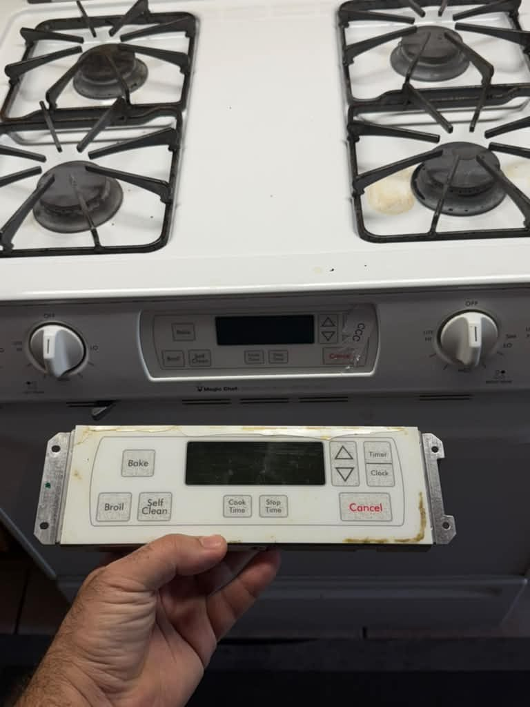
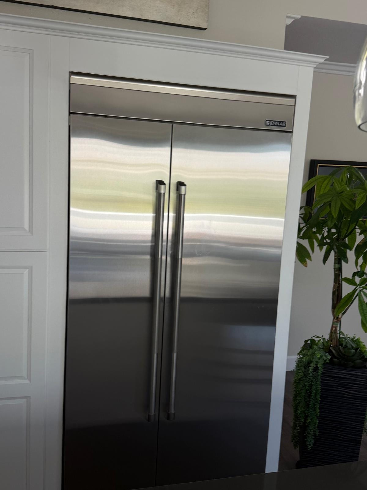
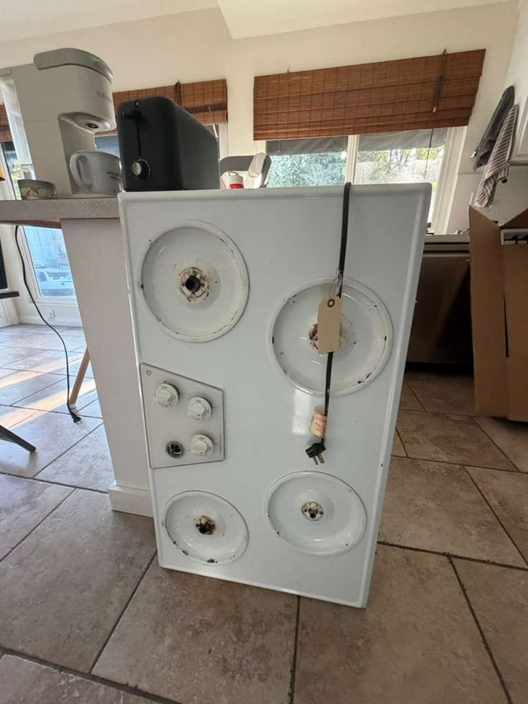
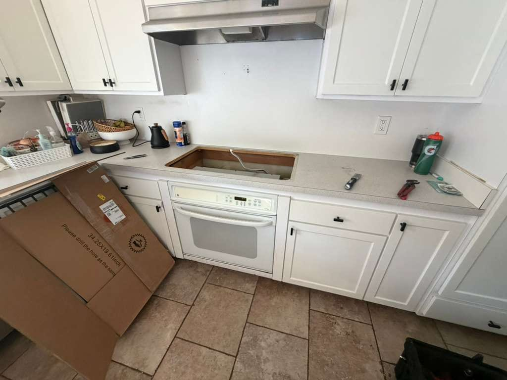
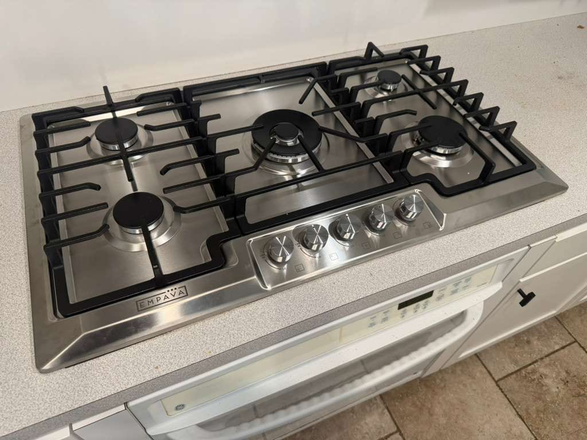

Appliance Repair in Fullerton, CA
Same-day service across Sunny Hills, Amerige Heights, Downtown Fullerton, Historic Fullerton, and the CSUF area. All major brands. Licensed & insured.
5.0 · 162 Google reviewsMon–Sat, 8am–7pm. Two-hour arrival window. The technician calls before arriving.
See neighborhoods and ZIP codes
What to expect
- Flat $99 diagnostic feeApplied toward the repair if you approve the work.
- Written quote firstItemized, before any work starts.
- 90-day parts, 30-day laborWarranty on every repair.
- Same-day serviceCall or request online.
Family-owned since 2017 · Licensed, bonded & insured
Recent Service Calls in Fullerton
A Magic Chef range display board replacement, an Empava cooktop replacement shown in three steps, and a JennAir refrigerator maintenance visit.



Show all 5 repairs
What Orange County Customers Say
From our 162 verified 5-star Google reviews
Thank you for fixing my mom GE Monogram refrigerator. I recommend it fast and good service. Thank you!
I got my maintenance done on my washing machine and dryer.
AG did a great job repairing my dishwasher. He was prompt, quick and fair. I will use him again for any future repair needs.
What We Fix in Fullerton
Whether your fridge stopped cooling before the week's groceries spoil, or your washer is leaving clothes soaked, we diagnose and fix it, usually in a single visit.
Call or Request Online
Call (949) 629-5365 or submit the online form. Tell us the appliance type, brand, and what it's doing.Same-Day Dispatch
We give you a two-hour arrival window and call when your technician is heading to your Fullerton address.Diagnosis & Quote
The technician runs a full diagnostic and gives you a firm quote before starting any work. No surprises.Repair & Warranty
Most repairs complete in a single visit. All work carries a 90-day parts and 30-day labor warranty.
Pricing & Discounts
- $99 diagnostic fee, applied toward your repair
- 20% off labor for seniors 60+ & repeat customers
Estimates vary by brand, part availability, and diagnosis. Full pricing guide
Fullerton Neighborhoods We Serve
From the midcentury ranch homes of Sunny Hills to the newer builds of Amerige Heights, we send technicians to every Fullerton neighborhood. Same rates, no travel surcharges.
-
Sunny Hills
ZIP 92835Hillside community in northeast Fullerton, midcentury and ranch homes from the 1960s–1990s. Near Laguna Lake Park and Ralph B. Clark Regional Park.
-
Amerige Heights
ZIP 92833Master-planned community built 2001–2004 on the former Hughes Aircraft campus. Newer single-family homes with modern appliances now reaching repair age.
-
Downtown Fullerton / SOCO
ZIP 92832South of Commonwealth entertainment district. Historic bungalows and craftsman homes near the Fox Fullerton Theatre.
-
Historic Fullerton
ZIP 92832Tree-lined streets, restored vintage homes. Near Plummer Auditorium, Muckenthaler Cultural Center, and the landmark clock tower.
-
CSUF Area
ZIP 92831Dense residential area around California State University, Fullerton. Mix of condos, apartments, and single-family rentals with high appliance turnover.
-
Northwest & South Fullerton
ZIP 92833 & 92832Also covering ZIPs 92834, 92836, 92837, and 92838. Every part of Fullerton is within our service area.
Common Appliance Issues in Fullerton Homes
Fullerton's housing stock spans three distinct eras, and each era carries its own appliance failure profile.
In the 1960s–1980s ranch and split-level homes of Sunny Hills and Raymond Hills, original kitchen wiring can limit power delivery to high-draw appliances. Electric dryers and ranges on older circuits sometimes develop inconsistent heat, which accelerates heating element wear. Refrigerators in garage utility areas accumulate condenser dust faster in Fullerton's warmer inland climate, straining the compressor and shortening its lifespan.
Amerige Heights homes, built 2001–2004 on the former Hughes Aircraft site in northwest Fullerton, are now old enough for the first wave of component failures: drive belts on top-load washers, drain pump impellers on dishwashers, and capacitor drift in dryer motors. GE and Whirlpool appliances from that production era have documented thermostat calibration drift that affects oven temperature accuracy.
In the rental-heavy neighborhoods around CSUF (92831), appliances often go without maintenance for years. Dryer exhaust runs fill with lint and restrict airflow, causing long dry times and overheating. Top-load washers left unleveled develop bearing noise. Refrigerators with dirty condenser coils cycle constantly and run warm. All of these are diagnosable and fixable in a single visit.
Brands we repair
Fullerton homes run a wide range of brands, Whirlpool and GE in the older neighborhoods, LG and Samsung in mid-2000s builds, and Sub-Zero or Viking in the larger Sunny Hills estates. We service all of them. We also cover Dacor and DCS.
- Sub-Zero
- Wolf
- Samsung
- LG
- Whirlpool
- GE
- Maytag
- Frigidaire
- Bosch
- KitchenAid
- Kenmore
- Miele
- Thermador
- Viking
- Electrolux
Independent repair service. Not affiliated with or endorsed by these manufacturers; brand names and logos are trademarks of their owners. If your appliance is still under manufacturer warranty, check with the manufacturer before booking.
Fullerton Service Area Details
From our base in Stanton, we reach Amerige Heights and northwest Fullerton via the 91 freeway; Sunny Hills and northeast Fullerton are reached via the 57. Street and driveway parking is standard across Fullerton's residential neighborhoods, with no HOA access gates that require pre-coordination. We give you a two-hour arrival window and call when your technician is on the way. Same-day slots are available for calls received before noon, covering Sunny Hills, Amerige Heights, the CSUF area, and Downtown Fullerton.
Appliance repair across Fullerton
Universal Appliances Repair Group Inc. provides same-day service in Fullerton for refrigerators, washers, dryers, dishwashers, ovens, stoves, freezers, and garbage disposals. We cover Sunny Hills, Amerige Heights, Historic Fullerton, Downtown Fullerton, and the CSUF area, across ZIP codes 92831, 92832, 92833, and 92835.
Each housing era, from Sunny Hills ranch homes to Amerige Heights builds and the rental corridor around CSU Fullerton, has its own failure patterns, and we know them. We also serve nearby Anaheim, Buena Park, Brea, and La Habra. Call (949) 629-5365 or book online.
FAQ: Fullerton Appliance Repair
Still have a question? Call (949) 629-5365.
Yes. Same-day appliance repair is available throughout Fullerton when you call before noon. We dispatch from Stanton and can typically reach Sunny Hills, Downtown Fullerton, Amerige Heights, and the CSUF area, with a two-hour arrival window and a call before the technician arrives. Call (949) 629-5365 to confirm same-day availability.
We service all major brands in Fullerton: Whirlpool, GE, Samsung, LG, Bosch, KitchenAid, Maytag, Frigidaire, Electrolux, Sub-Zero, and Viking, among others. We service these brands but make no claim of factory authorization. If your appliance is still under manufacturer warranty, verify with the manufacturer before booking.
We cover all of Fullerton's ZIP codes: 92831 (CSUF area), 92832 (Downtown / Historic Fullerton), 92833 (Amerige Heights / northwest Fullerton), 92835 (Sunny Hills / northeast Fullerton), plus 92834, 92836, 92837, and 92838. If you're in Fullerton, we come to you; no extra travel fees.
Yes. Sunny Hills (92835) and Amerige Heights (92833) are both areas we serve regularly. Amerige Heights homes, built in the early 2000s, are now at the age where common appliance failures start: drive belts, heating elements, drain pumps. Sunny Hills features older midcentury homes often with appliances that are worth repairing rather than replacing.
Our technicians stock common replacement parts (heating elements, drive belts, drain pumps, thermostats, door gaskets, start relays) on the van. The majority of repairs are completed in a single visit. For less common parts that need to be ordered, we schedule a return visit as soon as the part arrives, typically within 1–2 business days.
The general guideline: if the appliance is under 10 years old and the repair costs less than half the price of a comparable new unit, repair almost always makes sense. Our technicians give you an honest assessment during the diagnostic visit; we'll tell you if replacement is the smarter call. We'd rather give you straight advice than spend money on a repair that won't last.
Yes. All repairs include a warranty on both parts and labor. If the same issue returns within 30 days, we come back and fix it at no additional charge; replaced parts stay covered for 90 days. Your technician will confirm the specific warranty terms when they provide the quote.
Repair Resources for Fullerton Homeowners
Guides written for appliances common in Fullerton homes.
Need Appliance Repair in Fullerton?
Same-day service available. All appliances, all brands. Licensed technicians, 90-day parts / 30-day labor warranty on every repair.
Call (949) 629-5365
Request a Repair
Mon–Sat, 8am–7pm